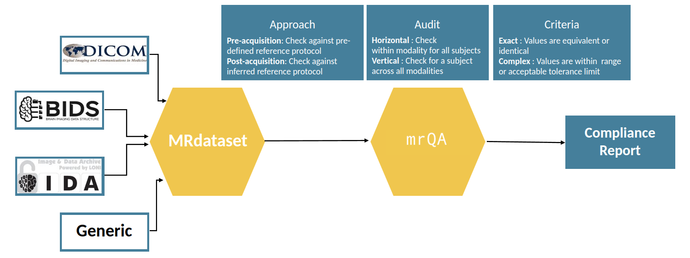

mrQA : automatic protocol compliance checks on MR datasets¶


Documentation: https://open-minds-lab.github.io/mrQA/
A tool for automatic evaluation of protocol compliance in MRI datasets. The tool analyzes MR acquisition data from DICOM headers and compares it against protocol to determine the level of compliance. It takes as input a dataset in DICOM/BIDS format. The tool outputs a compliance report in HTML format, with a percent compliance score for each protocol. The tool also outputs a JSON file with the compliance scores for each modality. In addition, it highlights any deviations from the protocol. The tool has been specifically created keeping radiologists in mind, but can be used by anyone who wants to evaluate that MR scans are acquired according to the pre-defined protocol and to minimize errors in acquisition process.
Simple schematic of the library:
mrQA uses MRDataset to efficiently parse various neuroimaging dataset formats, which is available here.
CLI usage¶
A protocol compliance report can be generated directly from the command line interface. The following is an example of generating a protocol compliance report
For a DICOM dataset:
mrqa --data-source /path/to/dataset --format dicom --name my_dataset
For a BIDS dataset:
mrqa --data-source /path/to/dataset --format bids --name my_dataset
API Tutorial¶
The following is a tutorial for using the API to generate a protocol compliance. The tutorial assumes that the user has a access to dummy dataset included with the mrQA package. The dataset can be a single subject or a multi-subject dataset. The tutorial will use the mrQA package to generate a protocol compliance report for the dataset.
https://nbviewer.org/github/Open-Minds-Lab/mrQA/blob/master/examples/usage.ipynb